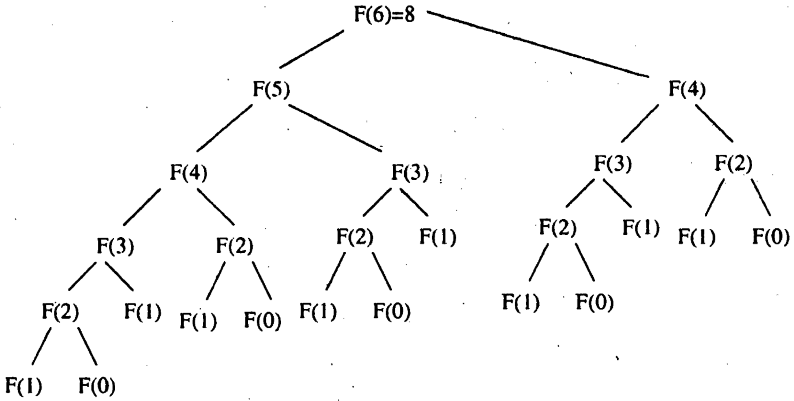
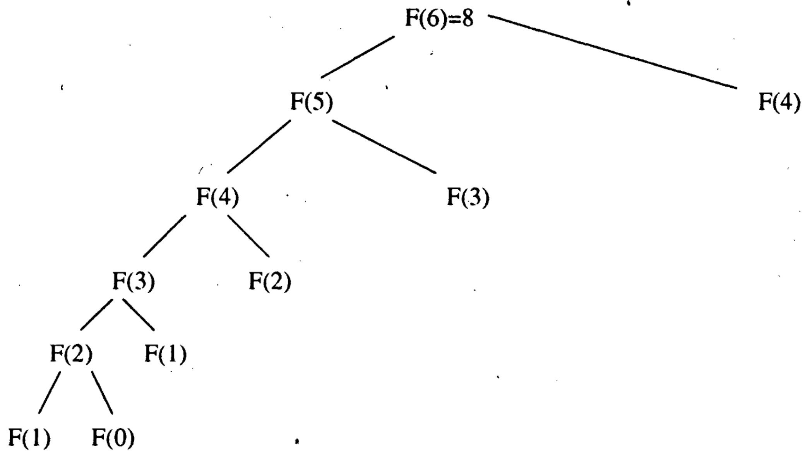
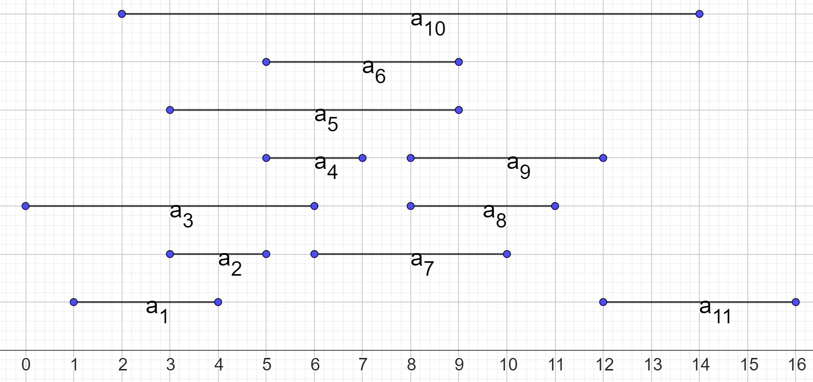
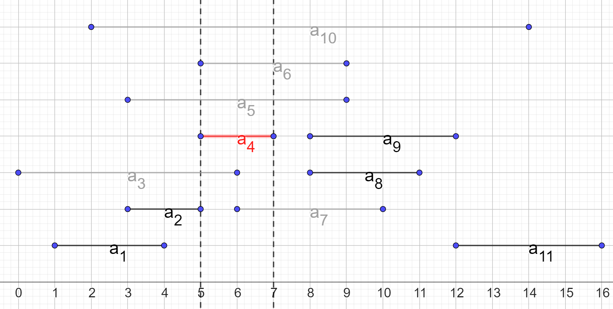
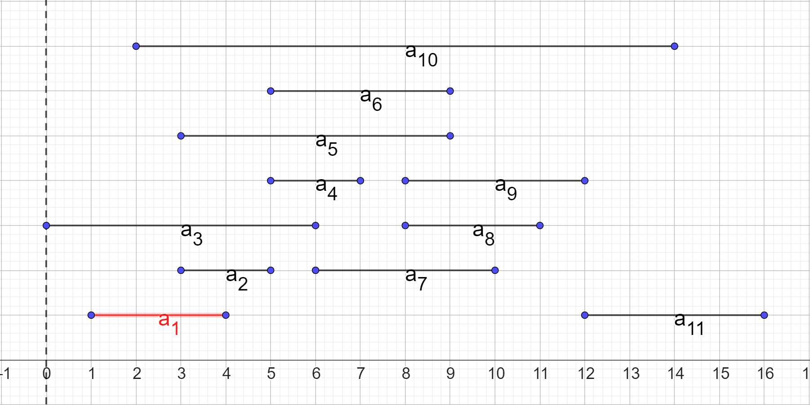
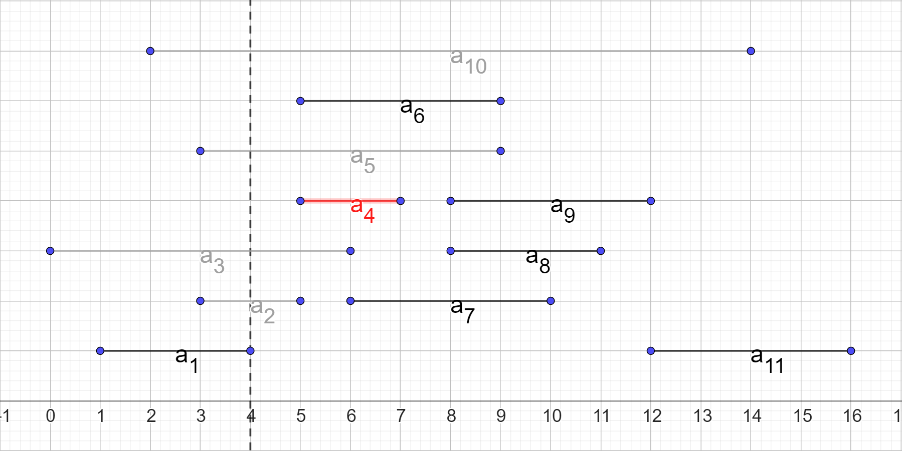
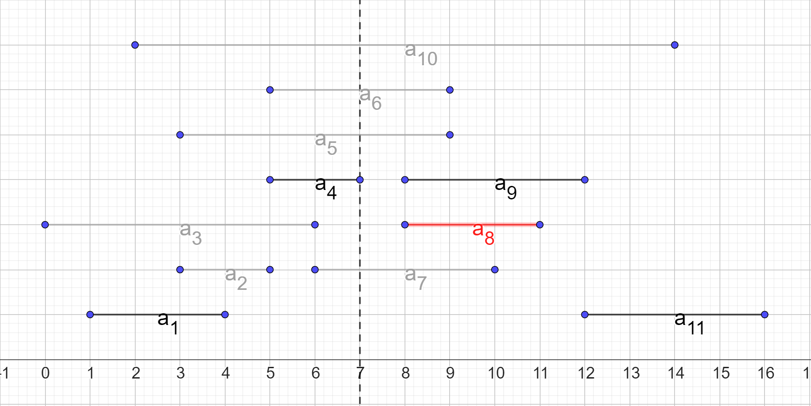
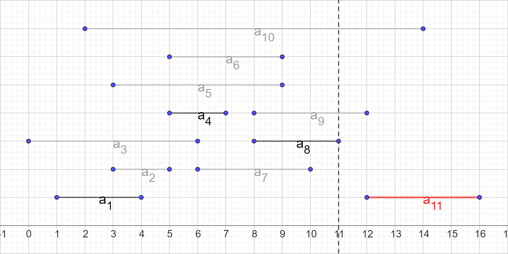
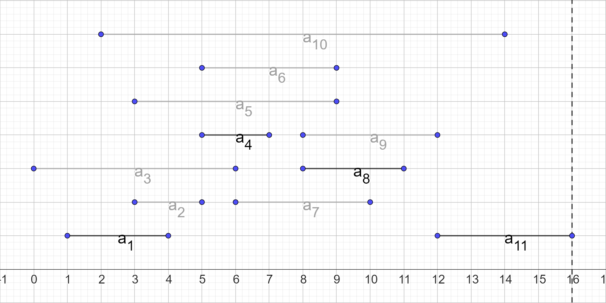

def fib(n):
if n == 1 or n == 2:
return 1
return fib(n - 1) + fib(n - 2)
Построим дерево рекурсии для данной функции с $n = 6$

def fib_memoized(n, table):
if n not in table:
table[n] = fib_memoized(n - 1, table) +
fib_memoized(n - 2, table)
return table[n]
Построим дерево рекурсии для данной функции с $n = 6$

def fib_bottom_up(n):
table = [0, 1, 1]
for i in range(3, n + 1):
table.append(table[i - 1] + table[i - 2])
return table[-1]
Дискретная задача о рюкзаке (0-1 knapsack problem) формулируется следующим образом:
$$ \begin{equation*} V[i, j] = \begin{cases} V[i - 1, j], если\ j - w_i < 0,\\ max(V[i - 1, j], v_i + V[i - 1, j - w_i]). \end{cases} \end{equation*} $$
Сформулируем ещё одну задачу:
Рассмотрим пример входных данных для задачи, состоящий из $11$ процессов, отсортированных по времени завершения
| $i$ | $1$ | $2$ | $3$ | $4$ | $5$ | $6$ | $7$ | $8$ | $9$ | $10$ | $11$ |
|---|---|---|---|---|---|---|---|---|---|---|---|
| $s_i$ | $1$ | $3$ | $0$ | $5$ | $3$ | $5$ | $6$ | $8$ | $8$ | $2$ | $12$ |
| $f_i$ | $4$ | $5$ | $6$ | $7$ | $9$ | $9$ | $10$ | $11$ | $12$ | $14$ | $16$ |

Покажем, что задача образует оптимальную подструктуру:

На рисунке:




